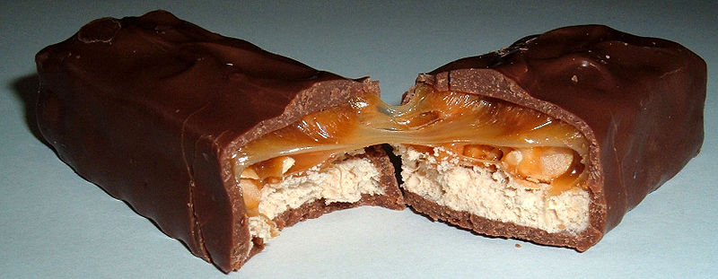

ス ニ ッ カ ー ズ
スニッカーズ(Snickers)は、米国のマース社 （日本での発売元はマース ジャパン） が販売しているスナックバーである。構成としてはピーナッツ入りのヌガーの上にキャラメルを絡めたピーナッツの層を重ね、ミルクチョコレートで全体を覆った棒状の菓子といえる。コンパクトな形状で携帯性に優れ、糖質・脂質などのエネルギー(1本247kcal)を迅速に摂取できることからサバイバル食や軍用レーションにも用いられる。
おなじみ銀歯の敵。朝食に食べると結構エネルギーが補給できるのでオススメ。